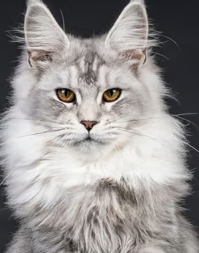
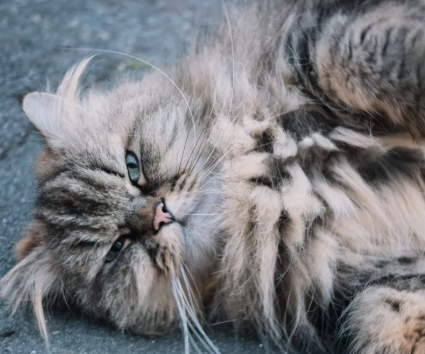
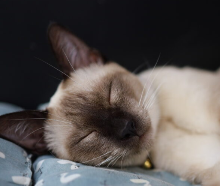
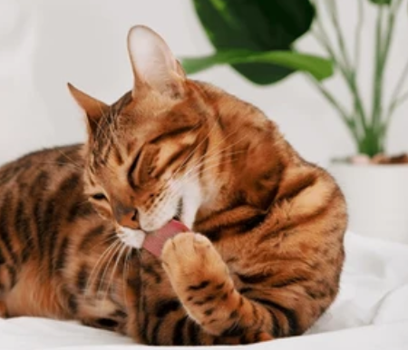
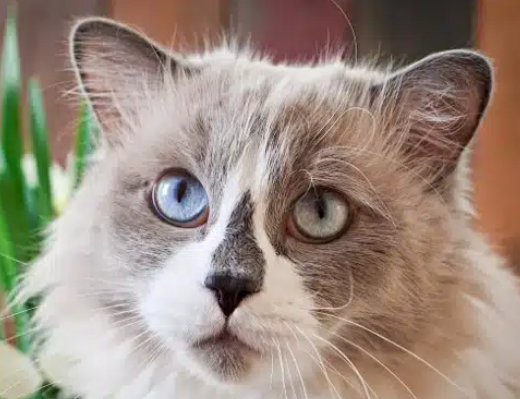
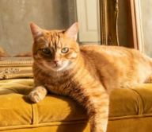
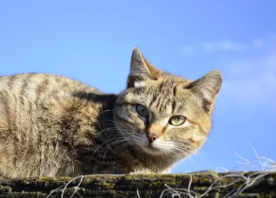
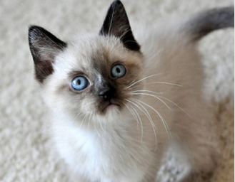

Zelda
Zelda es una Maine Coon majestuosa, dulce y muy tranquila. Le encanta explorar, seguir el movimiento de la pantalla mientras juegas y acurrucarse a tu lado a ronronear. La compañera legendaria ideal para tus tardes de gaming.

Zelda es una Maine Coon majestuosa, dulce y muy tranquila. Le encanta explorar, seguir el movimiento de la pantalla mientras juegas y acurrucarse a tu lado a ronronear. La compañera legendaria ideal para tus tardes de gaming.

Kirby es un Persa esponjoso, bonachón y amante de las siestas infinitas. Fiel a su nombre, absorbe todo el cariño que le des y lo devuelve en forma de mimos tranquilos al lado de tu teclado. El compañero de relax definitivo para tus partidas más intensas.

Yoshi es un Siamés estilizado, juguetón y súper expresivo. Famoso por sus característicos "miau" de bienvenida, adora treparse a tus hombros mientras juegas y ser el copiloto perfecto en cualquier partida. Un compañero ágil, curioso y lleno de energía.

Tails es un Bengalí de aspecto salvaje, híper activo y súper inteligente. Como si tuviera dos colas para multiplicarse, no para quieto: le chifla cazar juguetes en el aire, curiosearlo todo y saltar directo a tu escritorio para "ayudarte" a ganar la partida. El motor eléctrico de la casa.

Ganon es un Ragdoll enorme, ultrasuave y sorprendentemente pacífico. Pese a tener nombre de villano, su única "maldición" es desplomarse como un peluche en tus brazos en cuanto lo coges. Un gigante bonachón e imperturbable que pasará la partida entera dormido sobre tus piernas.

Sora es un Común Europeo cariñoso, curioso y con un corazón enorme. Siempre dispuesto a abrir la puerta a nuevas aventuras, le encanta observar atentamente el monitor y saltar al rescate de tus piernas en busca de mimos. El compañero noble e inseparable que necesita todo héroe gamer.

Spyro es un Romano todoterreno, astuto y lleno de energía. Haciendo honor a su nombre, tiene un espíritu aventurero inagotable: le encanta explorar, recolectar sus juguetes por la casa y lanzarse a la acción. Un compañero leal y divertido para darle chispa a tus partidas.

Eevee es un Snowshoe adorable, listo y lleno de encanto con sus patitas blancas distintivas. Tal como su nombre sugiere, es puro potencial y adaptación: se acomoda al instante a tu rutina gamer, ya sea cazando el cursor o evolucionando en un peluche inseparable durante tus partidas.